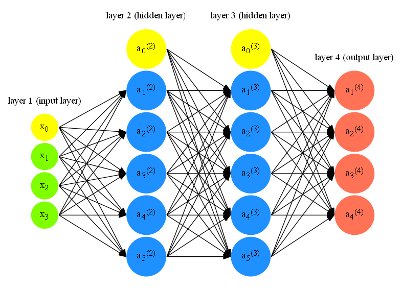

Andrew Ng's ML Week 04 - 05
Week 4 and 5 mainly talks about one important learning technique called "Neural Networks". It is especially heplful when there are many features and hence, many combinations for the linear or logistic regressions. Interestingly, I studied neural networks previously when I was a student at college. It may feel different when we revisit old friend.
Model
Representations
Below picture shows a typical neural network (I'll use NN as a shorthand).

-
\(L =\) total number of layers in network (i.e. \(L = 4\) for the above NN)
-
\(S_l =\) number of units (not counting bias unit) in layer \(l\) (i.e., \(S_1 = 3\), \(S_2 = S_3 = 5\), \(S_4 = S_L = 4\))
-
\(a_i^l =\) "activation" of unit \(i\) in layer \(l\). In fact, input features \(x_0, x_1, x_2, x_3\) can also be represented as \(a_0^{(1)}, a_1^{(1)}, a_1^{(2)}, a_1^{(3)}\) respectively.
-
\(\Theta^{(l)} =\) matrix of weights controlling function mapping from layer \(l\) to layer \(l+1\). For example,
Note
Notation here may look confusing. One example to help understand is \(\theta_{10}^{1}\) means weight from \(x_0\) in layer \(1\) to \(a_1\) in layer \(2\). In other words, \(\theta_{ji}^{l}\) means weight from \(a_i^{l}\) to \(a_j^{l+1}\). Then the rows in the matrix can be thought of as the weights from neurons in layer \(l\) to corresponding \(a_j\) in layer \(l+1\) (i.e., 1st row in the above example means weights from layer \(1\) to \(a_1\) in layer \(2\)). Explicitly, the number of columns in our current theta matrix is equal to the number of nodes in our current layer (including the bias unit). The number of rows is equal to the number of nodes in the next layer (excluding the bias unit).
- \(K =\) number of neurons in the output layer (i.e. \(S_L = K\)). In other words, \(K\) represents the number of classes in multi-class classification. This indicates that \(h_\theta(x) = \mathbb{R}^K\).
Note
Usually, in our training sets {\((x^{(1)}, y^{(1)}), \dots, (x^{(m)}, y^{(m)})\)}, we are given actual label (i.e. \(y^{(9)} = 10\) for handwritten digit recognition). However, we need to transform those labels into \(\mathbb{R}^k\) by doing,for instance, create \(\mathbb{R}^{10}\) vector with last position being \(1\) and rest being \(0\) as the representation for \(y^{(9)} = 10\).
With the above notations, we have the following property:
- If NN has \(S_l\) units in layer \(l\), \(S_{l+1}\) units in layer \(l+1\), then \(\Theta^{(l)}\) will be dimension \(S_{l+1} \times (S_l + 1)\). \(+1\) comes from the bias unit (shown in yellow in above NN picture).
Train a neural network
1. Pick a network architecture
The first step is to pick a network architecture. Specifically, the connectivity patterns between neurons. Prof. Ng says a reasonable default is to either have \(1\) hidden layer, or if \(>1\) hidden layer, have the same number of hidden units in every layer. Usually, the more hidden units the better.
2. Randomly initialize weights
Zero initialization is considered bad for NN (i.e. \(\theta_{ij}^{l} = 0\) for all \(i,j,l\)) because our activation output and gradient will all be identical and essentially we comput one feature in this network. That's why we need to randomly initialize the weights for symmetry breaking.
One effective strategy is to randomly select values for \(\theta_{ij}^{l}\) uniformly in the range [\(-\epsilon_\text{init}\),\(\epsilon_\text{init}\)]. We can choose \(\epsilon_\text{init}\) based upon the number of units in the network. A good choice of \(\epsilon_\text{init}\) is \(\epsilon_\text{init} = \frac{\sqrt{6}}{\sqrt{L_\text{in} + L_\text{out}}}\), where \(L_\text{in} = S_l\) and \(L_\text{out} = S_{l+1}\), which are the the number of units in the layers adjacent to \(\Theta^{(l)}\). Take above NN as an example, our \(\epsilon_\text{init}\) will be \(0.87\), which is calculated from \(\frac{\sqrt{6}}{\sqrt{3+5}}\). 1
3. Forward propagation
The next step we need to do is to use forward propagation to get \(h_\theta(x^{(i)})\) for any \(x^{(i)}\). Let's use above NN as an example to demonstrate how forward propagation is done. There are \(4\) output units in the output layer and thus, our \(h_\theta(x^{(i)})\) looks like
The general idea for the forward propagation is that we take in the input from previous layer, and multiply with our weights, and then apply our sigmoid function to get the activation value for the current layer. We start with the input layer and do this iteratively until we get to output layer, which its activation value will be our \(h_\theta(x^{(i)})\).
Concretely, let's first represent our input layer (with bias term) as \(x\) and define a new variable \(z^{(j)}\) as following:
Then, we can calculate the activation value \(a^{(j)}\) for the layer j as follows (treating \(x = a^{(1)}\)):
-
Add bias term \(a_0^{(j-1)} = 1\) to \(a^{(j-1)}\) and our new \(a^{(j-1)}\) looks like
$$ a^{(j-1)} = \begin{bmatrix} a_0^{(j-1)} \\ a_1^{(j-1)} \\ \dots \\ a_n^{(j-1)} \end{bmatrix} $$ -
Calculate \(z^{(j)}\) as follows:
$$ z^{(j)} = \Theta^{(j-1)}a^{(j-1)} $$Here, \(\Theta^{(j-1)}\) has dimension \(S_j \times (S_{j-1} + 1)\) and \(a^{(j-1)}\) has dimension \((S_{j-1} + 1) \times 1\). Then, our vector \(z^{(j)}\) has height \(S_j\).
-
We get a vector of our activation nodes for layer \(j\) as follows:
We repeat these three steps and get \(h_\theta(x^{(i)})\), which in our NN is the activation value \(a^{(4)}\) for \(i\)-th training example.
One key intuition for forward propagation is that the whole process is just like logistic regression except that rather than using original feature \(x_1, x_2, \dots, x_n\), it uses new features \(a^{(L-1)}\), which are learned by the NN itself.
4. Cost function \(J(\theta)\)
Now we need to compute the cost function \(J(\theta)\) of the NN in order to minimize the classification error with the given data. Since NN shares a lot similarity with the logistic regression, it's no hard to imagine that the NN's cost function \(J(\theta)\) shares the similar form with the logistic regression's cost function:
Here, \(h_\theta(x^{(i)})_k\) means the \(k\)th output in the output layer. The second part of the equation summs over all the weights \(\theta_{ji}^{(l)}\) except the bias term (i.e. \(i=0\)).
5. Backpropagation
Once we have the cost function, our next step is to find the derivative terms
\(\frac{\partial J(\theta)}{\partial \theta_{ij}^{(l)}}\) for every \(i,k,l\) in order to use various octave
built-in method (i.e. fminunc) to minimize \(J(\theta)\) as a function of \(\theta\). We use backpropagation to do this.
The intuition for the backpropagation is the following: given a training example \((x^{(i)}, y^{(i)})\), we will first run forward propagation to compute all the activiations throughout the network, including the output units. Then, for each node \(j\) in layer \(l\), we would like to compute an "error term" \(\delta_j^{(l)}\) that measures how much that node was "responsible" for any errors in our output. For an output node, we can directly measure the difference between the network's activation and the true target value, and use that to define \(\delta_j^{(L)}\). For the hidden units, we can compute \(\delta_j^{l}\) based on a weighted average of the error terms of the nodes in layer \((l+1)\).
Here is the algorithm in details:
- Given training set {\((x^{(1)}, y^{(1)}), \dots, (x^{(m)}, y^{(m)})\)}
-
Set \(\Delta_{ij}^{(l)} = 0\) (for all \(i,l,j\))
-
For i=1:m,- perform forward propagation to compute \(a^{(l)}\) for \(l = 2, 3, \dots, L\)
- using \(y^{(i)}\), compute \(\delta^{(L)} = a^{(L)} - y^{(i)}\)
- compute \(\delta^{(L-1)}, \delta^{(L-2)}, \dots, \delta^{(2)}\) using \(\delta^{(l)} = ((\Theta^{(l)})^T \delta^{(l+1)}).\ast a^{(l)}.\ast (1-a^{(l)})\)
- \(\Delta_{ij}^{(l)} := \Delta_{ij}^{(l)} + a_j^{(l)}\delta_i^{(l+1)}\) (Vectorized form is \(\Delta^{(l)} := \Delta^{(l)} + \delta^{(l+1)}(a^{(l)})^T\))
-
\(D_{ij}^{(l)} := \frac{1}{m}\Delta_{ij}^{(m)} + \frac{\lambda}{m}\theta_{ij}^{(l)} \text{ if } j \ne 0\) and \(D_{ij}^{(l)} := \frac{1}{m}\Delta_{ij}^{(m)} \text{ if } j = 0\).
-
\(\frac{\partial J(\theta)}{\partial \theta_{ij}^{(l)}} = D_{ij}^{(l)}\)
Intuitvely, backpropagation algorithm is alot like forward propagation running backward. We can then use gradient descent or advanced optimization method to try to minimize \(J(\theta)\) as a function of parameters \(\theta\) 2.
Note
Notice that we don't compute \(\delta_{(1)}\) because \(\delta_{(1)}\) is associated with the input layer, which are features we observed from the training examples. So, there are no "error" involved. In addition, \(.\ast\) means we do element-wise multiplication in octave.
Implementation details
Week 5's programming assignment on NN learning is the most challenging one I have met so far in this course. Initially, I plan to go through lots of details in terms of implementation in this section. However, after I finish the model section above and take a look at the assignment code again, I realize that the algorithms described above reflect fair accurately on how the code should be written.
However, there is one point I want to emphasize \(a^{(1)}\) is a vector with dimension \(n \times 1\). This is important if you want to apply the algorithms exactly. When I first coded the program, my \(a^{(1)}\) is a row vector with dimension \(1 \times n\), which causes me much trouble for the rest of implementations.
\(\Delta^{(l)} := \Delta^{(l)} + \delta^{(l+1)}(a^{(l)})^T\) looks confusing for me as well for the first time. My question is how many \(\Delta^{(l)}\) are there. My trick is to take a look at the last term of the equation. \(\delta^{(l+1)}(a^{(l)})^T\) indicates that \(\Delta^{(l)}\) starts with the second last layer and there is one until input layer (including). So, in our NN above, there are three \(\Delta^{(l)}\) we should update.
-
Here, it is unclear for me which two layers we should choose to calculate \(\epsilon_\text{init}\). In the programming assignment 4, the value is calculated from the layer 1 (input layer) and layer 2 (1st hidden layer). ↩
-
You can use gradient checking to verify if the backpropagation is implemented correctly. ↩